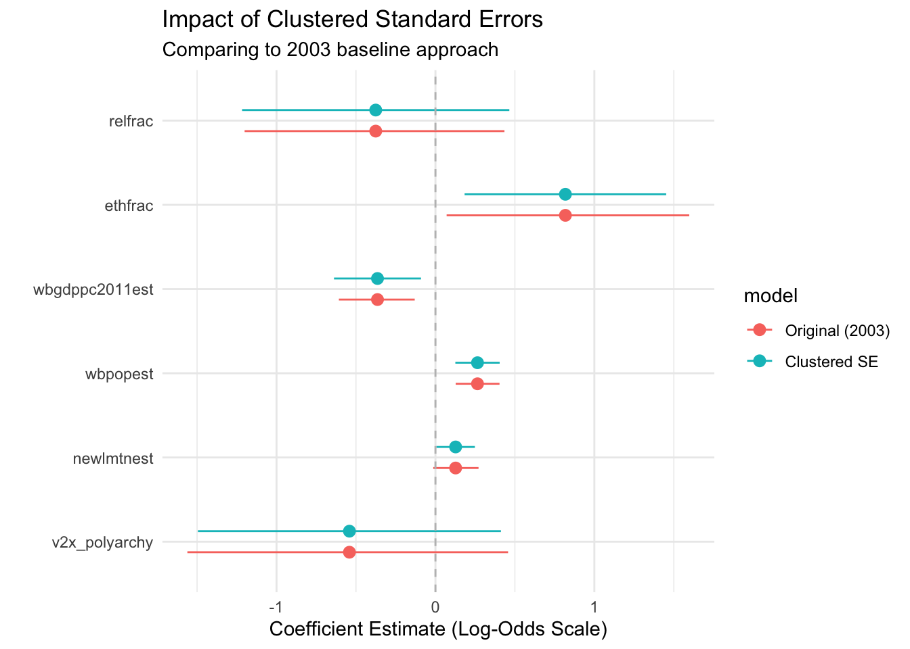
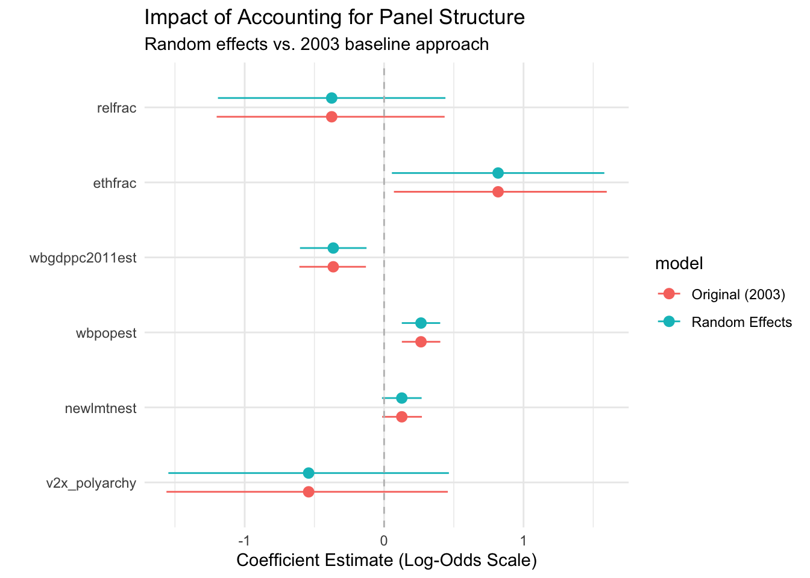
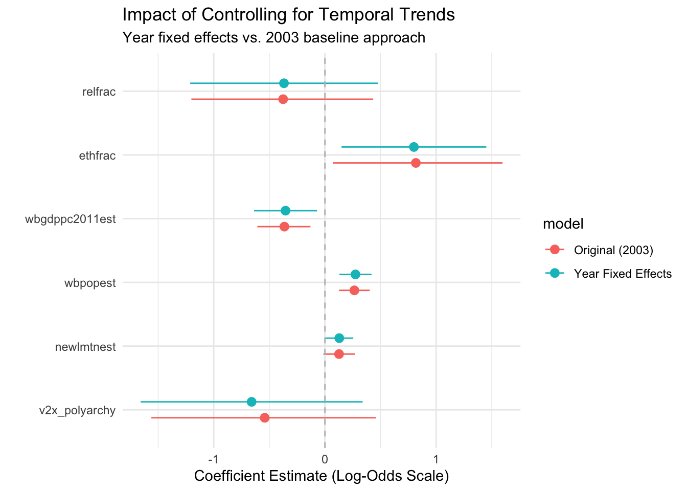
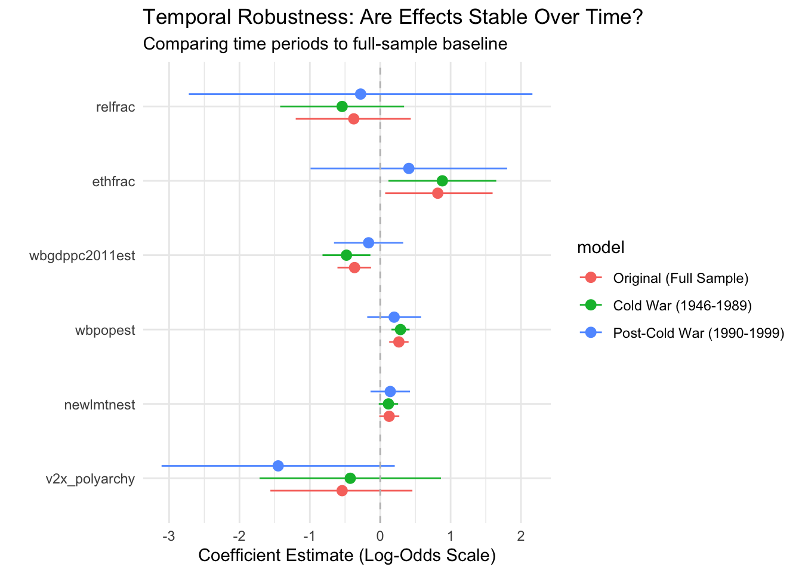

Install the fixest package (install.packages("fixest")) and review the documentation
Install the lme4 package (install.packages("lme4")) for mixed effects models
Install the sandwich package documentation for robust standard errors (install.packages("sandwich"))
Overview
Fearon and Laitin’s groundbreaking 2003 study of civil war onset helped establish many conventions for conflict research. But that was over 20 years ago! How would we approach the same research question today with modern econometric tools and a deeper understanding of causal identification challenges?
In this module, we’ll explore how contemporary data scientists would tackle the Fearon and Laitin analysis differently. We’ll discover why clustered standard errors are now standard practice for panel data and how they can change our conclusions about statistical significance. We’ll learn when random effects models help account for panel structure while preserving key theoretical variables. We’ll understand how temporal fixed effects control for confounding trends that might bias our estimates. Finally, we’ll get a preview of modern causal identification strategies and why simple correlational approaches often fall short of causal claims.
By the end of this module, you’ll understand the importance of accounting for non-independence in panel data, know when random effects models are valuable for testing theories about structural factors, recognize how temporal confounds can bias estimates, and appreciate the challenges of making causal claims from observational data. Most importantly, you’ll be prepared for the more sophisticated analytical approaches you’ll encounter in advanced courses.
Setting Up the Modern Analysis
Let’s start by recreating our Fearon and Laitin dataset, but this time we’ll structure it properly for modern panel data analysis:
Let’s start with the original Fearon and Laitin approach for comparison:
# The original approach - pooled logistic regressionoriginal_model<-glm(ucdponset~v2x_polyarchy+newlmtnest+wbpopest+wbgdppc2011est+ethfrac+relfrac, data =conflict_df, family ="binomial")summary(original_model)
Call:
glm(formula = ucdponset ~ v2x_polyarchy + newlmtnest + wbpopest +
wbgdppc2011est + ethfrac + relfrac, family = "binomial",
data = conflict_df)
Coefficients:
Estimate Std. Error z value Pr(>|z|)
(Intercept) -5.53894 1.38149 -4.009 6.09e-05 ***
v2x_polyarchy -0.54129 0.51336 -1.054 0.291690
newlmtnest 0.12696 0.07256 1.750 0.080166 .
wbpopest 0.26463 0.07029 3.765 0.000167 ***
wbgdppc2011est -0.36465 0.12180 -2.994 0.002755 **
ethfrac 0.81768 0.38874 2.103 0.035427 *
relfrac -0.37589 0.41629 -0.903 0.366543
---
Signif. codes: 0 '***' 0.001 '**' 0.01 '*' 0.05 '.' 0.1 ' ' 1
(Dispersion parameter for binomial family taken to be 1)
Null deviance: 1172.3 on 6090 degrees of freedom
Residual deviance: 1113.6 on 6084 degrees of freedom
AIC: 1127.6
Number of Fisher Scoring iterations: 7
This is the approach that was standard in 2003: treat each country-year as an independent observation and run a pooled logistic regression. But we now know this approach has serious problems.
Problem #1: Non-Independence and Clustered Standard Errors
The biggest issue with the original approach is that it assumes each observation is independent. But countries are observed multiple times, and observations within the same country are likely correlated. A country that experiences conflict in one year is more likely to experience conflict in subsequent years. Economic and political characteristics also persist over time within countries.
Modern practice requires clustered standard errors that account for this non-independence:
# Modern approach with clustered standard errorsclustered_model<-feglm(ucdponset~v2x_polyarchy+newlmtnest+wbpopest+wbgdppc2011est+ethfrac+relfrac, data =conflict_df, family ="binomial", cluster ="gwcode")summary(clustered_model)
Notice how the standard errors change! This is not just a technical detail—it can fundamentally alter which variables we consider statistically significant and how confident we are in our estimates.
Code
# Compare original vs clusteredclustering_comparison<-list("Original (2003)"=original_model,"Clustered SE"=clustered_model)modelplot(clustering_comparison, coef_omit ="Intercept")+geom_vline(xintercept =0, linetype ="dashed", color ="gray")+labs(title ="Impact of Clustered Standard Errors", subtitle ="Comparing to 2003 baseline approach", x ="Coefficient Estimate (Log-Odds Scale)")+theme_minimal()

Problem #2: Panel Structure and Random Effects
Beyond the standard errors issue, pooled models ignore the panel structure of our data entirely. Each country has its own baseline conflict risk due to unobserved factors like historical legacies, cultural characteristics, or geographic features not captured in our variables.
Random effects models account for this panel structure while still allowing us to estimate effects of time-invariant variables like terrain and ethnic fractionalization:
# Random effects model using lme4re_model<-glmer(ucdponset~v2x_polyarchy+newlmtnest+wbpopest+wbgdppc2011est+ethfrac+relfrac+(1|gwcode), data =conflict_df, family ="binomial")summary(re_model)
# Compare original vs random effectspanel_comparison<-list("Original (2003)"=original_model,"Random Effects"=re_model)modelplot(panel_comparison, coef_omit ="Intercept")+geom_vline(xintercept =0, linetype ="dashed", color ="gray")+labs(title ="Impact of Accounting for Panel Structure", subtitle ="Random effects vs. 2003 baseline approach", x ="Coefficient Estimate (Log-Odds Scale)")+theme_minimal()

Why Random Effects Instead of Fixed Effects?
Fixed effects would absorb all time-invariant variables—terrain, ethnic fractionalization, religious fractionalization—which are central to Fearon and Laitin’s theory! Random effects allows us to test these key hypotheses while still accounting for unobserved country-specific factors.
The trade-off is that random effects assumes these country-specific factors are uncorrelated with our predictors, which may be questionable for conflict research.
Problem #3: Temporal Confounds and Year Fixed Effects
Another major issue is temporal confounding. The world changed dramatically during 1946-1999: the Cold War ended, international norms shifted, economic systems evolved. Without controlling for these temporal trends, we might attribute to our variables effects that are really due to changing global conditions.
Year fixed effects control for any factors that affect all countries in a given year:
# Add year fixed effects to control for temporal trendsyear_fe_model<-feglm(ucdponset~v2x_polyarchy+newlmtnest+wbpopest+wbgdppc2011est+ethfrac+relfrac|year, data =conflict_df, family ="binomial", cluster ="gwcode")summary(year_fe_model)
# Compare original vs year fixed effectstemporal_comparison<-list("Original (2003)"=original_model,"Year Fixed Effects"=year_fe_model)modelplot(temporal_comparison, coef_omit ="Intercept")+geom_vline(xintercept =0, linetype ="dashed", color ="gray")+labs(title ="Impact of Controlling for Temporal Trends", subtitle ="Year fixed effects vs. 2003 baseline approach", x ="Coefficient Estimate (Log-Odds Scale)")+theme_minimal()

Robustness Check: Are the Effects Stable Over Time?
Given the major global changes during this period, we should check whether relationships were consistent across time. Let’s compare the Cold War period (1946-1989) with the post-Cold War period (1990-1999):
# Split sample analysiscold_war<-conflict_df|>filter(year<=1989)post_cold_war<-conflict_df|>filter(year>1989)cold_war_model<-feglm(ucdponset~v2x_polyarchy+newlmtnest+wbpopest+wbgdppc2011est+ethfrac+relfrac, data =cold_war, family ="binomial", cluster ="gwcode")post_cold_war_model<-feglm(ucdponset~v2x_polyarchy+newlmtnest+wbpopest+wbgdppc2011est+ethfrac+relfrac, data =post_cold_war, family ="binomial", cluster ="gwcode")cat("Cold War period:", nrow(cold_war), "observations")
Cold War period: 4627 observations
cat("Post-Cold War period:", nrow(post_cold_war), "observations")
Post-Cold War period: 1464 observations
Code
# Compare time periods to original baselinerobustness_comparison<-list("Original (Full Sample)"=original_model,"Cold War (1946-1989)"=cold_war_model,"Post-Cold War (1990-1999)"=post_cold_war_model)modelplot(robustness_comparison, coef_omit ="Intercept")+geom_vline(xintercept =0, linetype ="dashed", color ="gray")+labs(title ="Temporal Robustness: Are Effects Stable Over Time?", subtitle ="Comparing time periods to full-sample baseline", x ="Coefficient Estimate (Log-Odds Scale)")+theme_minimal()

A Preview of Causal Identification: The Democratization “Treatment”
Modern research increasingly thinks in terms of causal identification. Instead of asking “Are democratic countries less likely to experience conflict?” we might ask “Does democratization reduce conflict risk?” This shifts focus from correlation to causation.
Let’s explore this by treating democratization episodes as a “treatment”:
# Look for democratization episodescat("Democratization episodes in the data:", sum(conflict_df$democratizing))
Democratization episodes in the data: 174
# What predicts democratization?democratization_predictors<-feglm(democratizing~lag(wbgdppc2011est, 1)+lag(wbpopest, 1)+newlmtnest|year, data =conflict_df, family ="binomial", cluster ="gwcode")# Does democratization reduce subsequent conflict?democratization_effects<-feglm(ucdponset~lag(democratizing, 1)+lag(democratizing, 2)+wbgdppc2011est+wbpopest+newlmtnest|year, data =conflict_df, family ="binomial", cluster ="gwcode")summary(democratization_effects)
The democratization analysis likely shows weak or non-significant effects. This isn’t a failure—it’s a valuable lesson! Consider:
Why might democratization episodes be rare in this dataset?
What does it mean that we can’t easily identify causal effects of democratization?
How might researchers today approach this question differently?
What additional data or research designs might help identify causal effects?
Model Comparison Summary
Let’s create a summary table to see how our conclusions change across specifications:
Code
# Create comparison table focusing on key modelskey_models<-list("Original"=original_model,"Clustered SE"=clustered_model,"Random Effects"=re_model,"Year FE"=year_fe_model)coef_order<-c("v2x_polyarchy"="Democracy (Polyarchy)","newlmtnest"="Mountainous Terrain", "wbpopest"="Population (log)","wbgdppc2011est"="GDP per Capita (log)","ethfrac"="Ethnic Fractionalization","relfrac"="Religious Fractionalization","(Intercept)"="Constant")modelsummary(key_models, coef_map =coef_order, stars =TRUE, gof_map =c("nobs", "aic"), output ="gt", title ="Table 1: How Modern Methods Change Fearon & Laitin Results", notes =list("Standard errors clustered by country for models 2 and 4.","Random effects model includes country-level random intercepts.", "Year FE model includes fixed effects for each year."))
Table 1: How Modern Methods Change Fearon & Laitin Results
Original
Clustered SE
Random Effects
Year FE
Democracy (Polyarchy)
-0.541
-0.541
-0.541
-0.659
(0.513)
(0.486)
(0.513)
(0.509)
Mountainous Terrain
0.127+
0.127*
0.127+
0.129*
(0.073)
(0.062)
(0.073)
(0.064)
Population (log)
0.265***
0.265***
0.265***
0.275***
(0.070)
(0.071)
(0.070)
(0.074)
GDP per Capita (log)
-0.365**
-0.365**
-0.365**
-0.354*
(0.122)
(0.140)
(0.122)
(0.144)
Ethnic Fractionalization
0.818*
0.818*
0.818*
0.800*
(0.389)
(0.324)
(0.389)
(0.332)
Religious Fractionalization
-0.376
-0.376
-0.376
-0.368
(0.416)
(0.429)
(0.416)
(0.430)
Constant
-5.539***
-5.539***
-5.539***
(1.381)
(1.494)
(1.381)
Num.Obs.
6091
6091
6091
4827
AIC
1127.6
1127.6
1129.6
1114.0
+ p < 0.1, * p < 0.05, ** p < 0.01, *** p < 0.001
Standard errors clustered by country for models 2 and 4.
Random effects model includes country-level random intercepts.
Year FE model includes fixed effects for each year.
What We’ve Learned About Modern Practice
This analysis reveals several crucial insights about how empirical research has evolved:
Standard errors matter enormously. Clustering can dramatically increase uncertainty around estimates, potentially changing which variables we consider significant. Ignoring non-independence can lead to false confidence in our results.
Panel structure provides both opportunities and challenges. Random effects allow us to account for unobserved country-specific heterogeneity while preserving the ability to test theories about time-invariant factors like geography and social structure. But this comes with assumptions about how unobserved factors relate to our predictors.
Temporal confounds are everywhere. Year fixed effects help us separate the effects of our variables from broader historical trends. Without these controls, we might attribute to democracy or development effects that really reflect global changes in conflict patterns.
Causal identification is hard. Simply including control variables doesn’t solve the problem of confounding. Modern research increasingly relies on natural experiments, instrumental variables, and other identification strategies that go beyond the standard regression approach.
Robustness matters. Findings that depend critically on specific modeling choices or sample restrictions should be viewed with skepticism. Robust results survive multiple reasonable specifications.
Looking Ahead: Modern Causal Identification
While this module focused on improving traditional regression approaches, contemporary conflict research increasingly employs more sophisticated identification strategies:
Instrumental variables for democracy (e.g., using regional democratization waves)
Regression discontinuity designs around arbitrary thresholds
Difference-in-differences approaches comparing similar countries before/after policy changes
Natural experiments exploiting random variation in treatment assignment
These approaches represent the cutting edge of empirical research and will be covered in advanced econometrics courses. But the foundations we’ve built here—understanding panel data, clustering, and the challenges of causal inference—prepare you for these more sophisticated methods.
Summary
Twenty years after Fearon and Laitin’s influential study, we would approach the same research question with greater appreciation for the complexities of panel data and causal identification. While their core insights about the importance of state capacity, terrain, and economic development remain influential, modern methods reveal greater uncertainty around specific estimates and highlight the challenges of making causal claims from observational data.
This evolution reflects the broader maturation of empirical social science. As our methods become more sophisticated, we become more humble about what we can conclude from correlational evidence—but also more creative about finding ways to identify causal relationships in complex social phenomena.